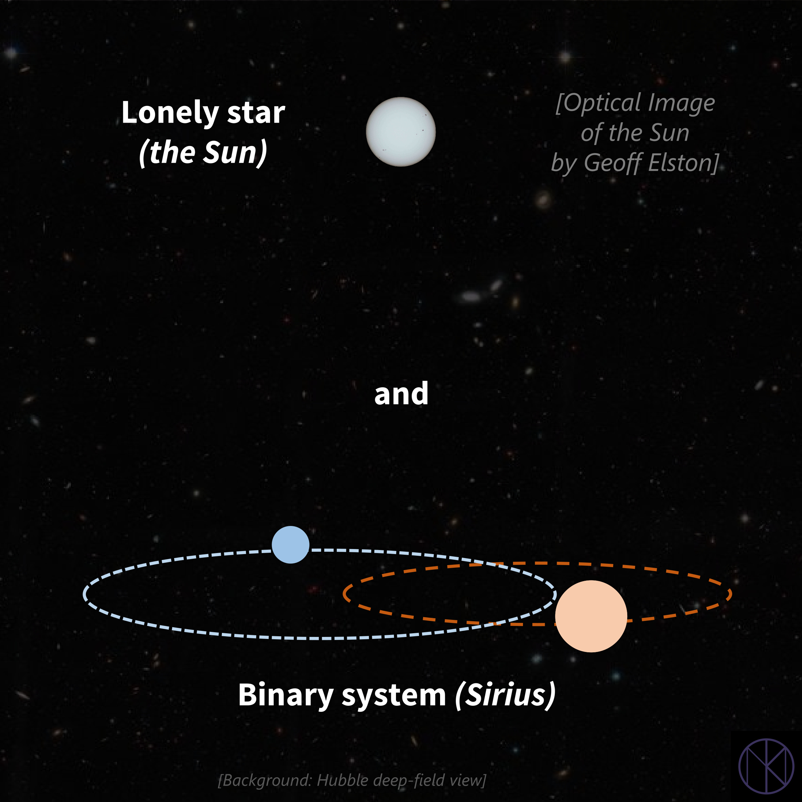
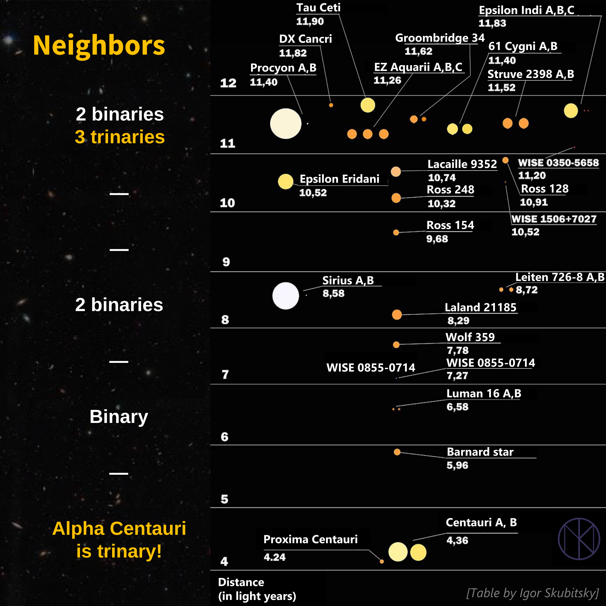
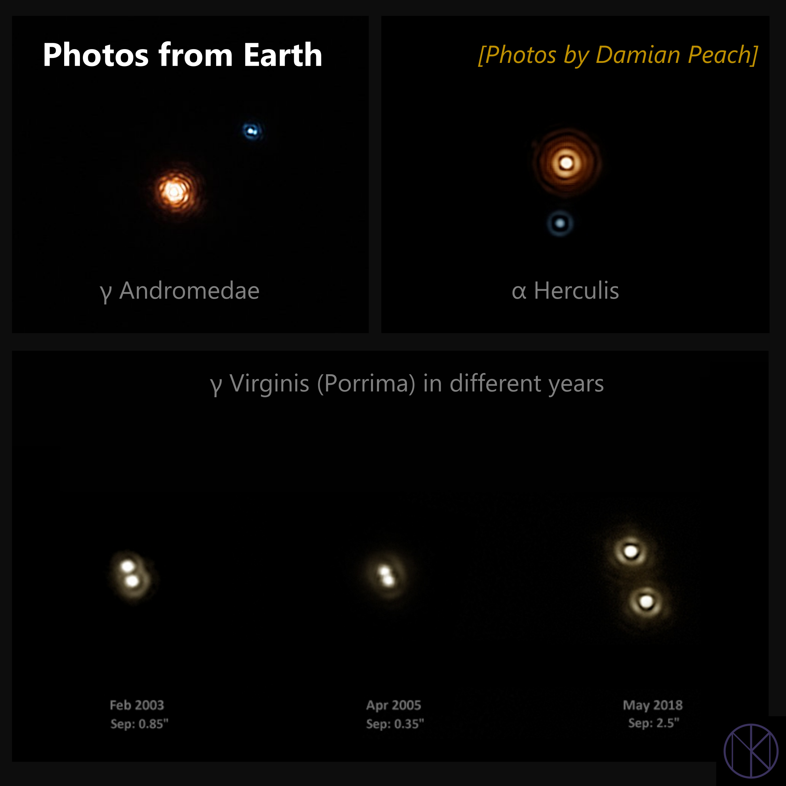
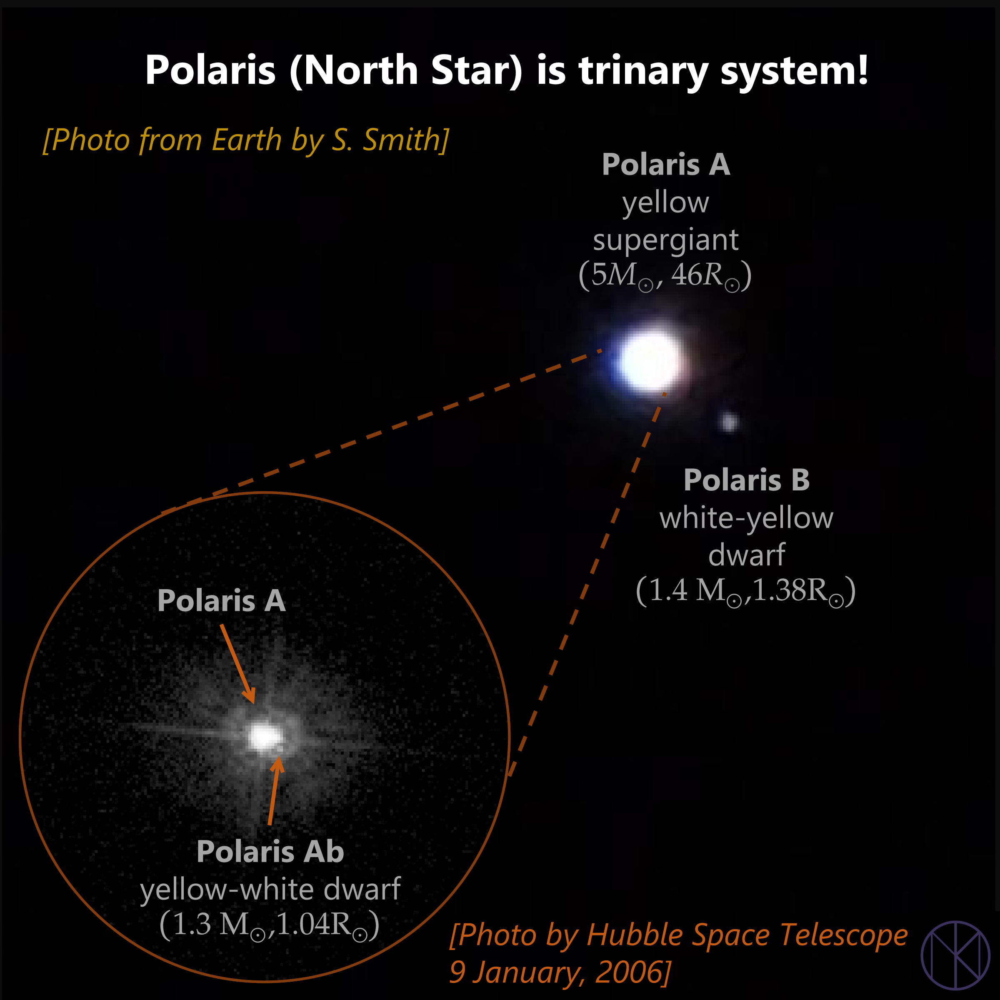
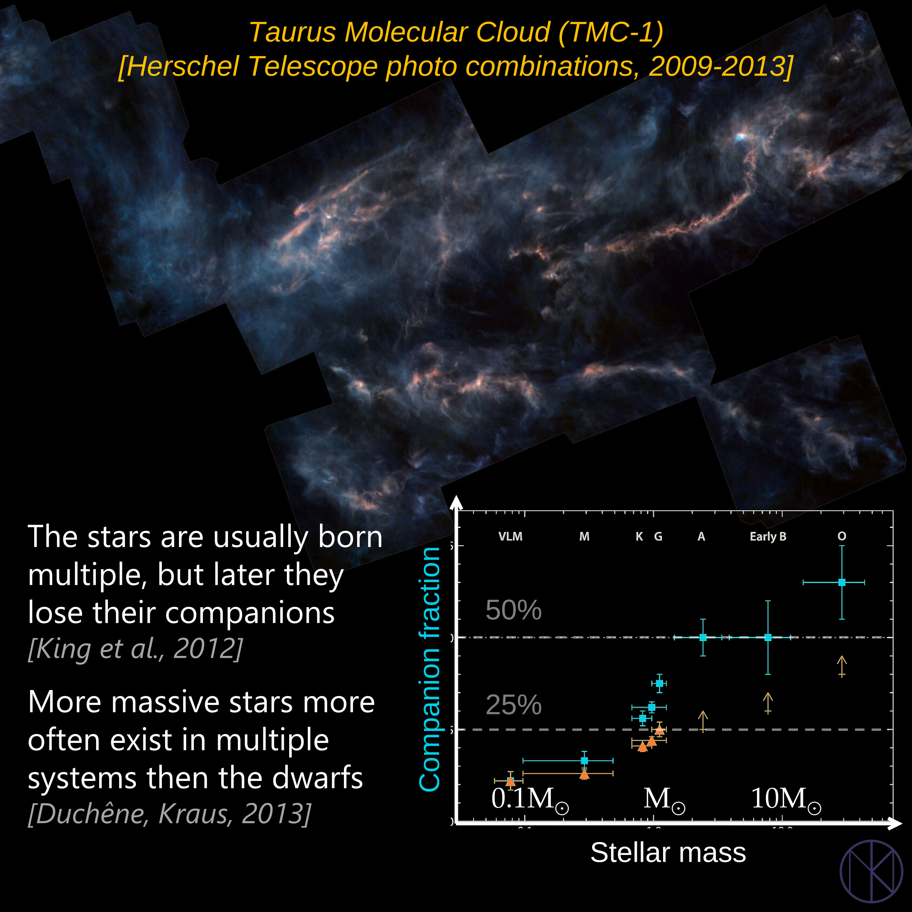

Do stars actually wonder about us?
3 May 2026
Instead of a preface
Before you start reading, try a short (non-spiritual) session:
- Turn off the lights, close your eyes
- In your imagination, you can move freely across our Galaxy — in any direction, at any speed Drift away from the Solar System, but stay within the Milky Way. What do you see around you?
- Look closely at the surrounding stars. What colors are they? How many do you see?
Try it, seriously. It’s a surprisingly useful exercise
Lonely stars?
Your imagination probably paints something like this: darkness everywhere, with stars scattered in all directions — mostly white-yellow (like the Sun), but also blue and red. Toward the Galactic center, they grow denser; in the opposite direction, sparser.
It feels as if most stars are alone. But that impression is misleading. Even though we can’t resolve binary systems with the naked eye, a substantial fraction of known stars belong to multiple systems.
{kind=link}

Closest neighbors
This becomes especially clear if you look at our nearest neighbors: Alpha Centauri (a triple system), Sirius (binary), Procyon (binary). Within a radius of 10 light-years from the Sun, nearly half of the stars have a companion.
{kind=link}

Observing multiple systems from Earth
Surprisingly, imaging double stars is within reach even for amateur astronomers. The results can be striking.
{kind=link}

Example of Polaris
Take Polaris: not single, but a triple system. The star we see is Polaris A — a yellow supergiant, about five times the Sun’s mass. Its companion, Polaris B, is a yellow-white dwarf (still more massive than the Sun).
In the early 21st century, a third member was found: Polaris Ab. A Sun-like star so close to the supergiant that it required the Hubble telescope to detect.
{kind=link}

Conclusions
Despite what some suggest, the Milky Way isn’t dominated by multiple systems.
On average, stars have > 1.5 companions — so binaries are common overall. But:
- Most stars form in molecular clouds
- They’re often born in multiples, which can later break apart
- Massive stars are more likely to have companions
- In the Galactic field (like near the Sun), single stars are ~two times more common
{kind=link}

So when you imagine drifting through the Galaxy: in the field, about every third system is binary — while in star-forming regions, companions are the norm.
Literature:
[1] R. King et al. Multiplicity in nearby star-forming regions. (2012) 10.1111/j.1365-2966.2012.20437.x[2] G. Duchêne, A. Kraus - Stellar Multiplicity. (2013) 10.1146/annurev-astro-081710-102602
[3] N. R. Evans et al. - Polaris: Amplitude, Period Change, and Companions. (2002) 10.1086/338583